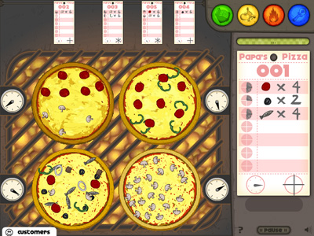

"Want to hear a joke about pizza? Never mind... It's too cheesy."
Why did the pizza start his own business?
He wanted to make some dough!
Want to start your own pizza business? Want to see smiles on customers' faces after they've received the best pizza in the world? Play Papa's Pizzeria!
Game Features:
Pizzeria simulation in the Papa Louie universe.
Over 35 unique unlockable customers, each with their own favorite order.
Multi-tasking between topping, baking, and cutting.
Bronze, Silver, and Gold Badges for each customer.
Highscore Board.
Unlimited gameplay.
The Order Station: When you open up your business for the day, customers will regularly arrive to order pizzas. They will order pizzas with directions on how they want it made: toppings, how much time it should be baked, and how it's cut. The game will automatically take their order when you click on the waiting customer.
This is also where customers will rate your performance at all stations, and will leave tips accordingly. Thus, as you're preparing their order, don't forget to come back to the order station to see if there are any waiting customers, or else impatient customers will lose you precious points!
You can customize this station with decorations earned with money/points, and customers will interact with these decorations as they wait for their order to be finished.
The Topping Station: After receiving orders, head over to the topping station to place toppings on a pre-made pie! Drag and drop toppings on specific areas of the pizza to create an outstanding pizza! You start off with pepporoni as the only topping, but as you advance to Day 2, you can unlock the following toppings:
Anchovies
Onions
Mushrooms
Peppers
Sausages

The Baking Station: Each customer wants their pizza prepared to a different amount of freshness. After finishing with toppings, send your pizza to the oven for cooking. Time yourself, and take the pie out when it reaches the timer mark as indicated on the customer's order!
The Cutting Station: Slice the pizza into even slices, as indicated by the order, then send the steaming, fresh pizza out to the waiting customer!
Customers: Customers are a valuable component to your business. Be sure to get their order as precise and quick as possible for them to leave a good rating and tip! If you do so, customers will become regulars and you will be able to unlock new customers that may tip more or may demand a more complicated pizza!